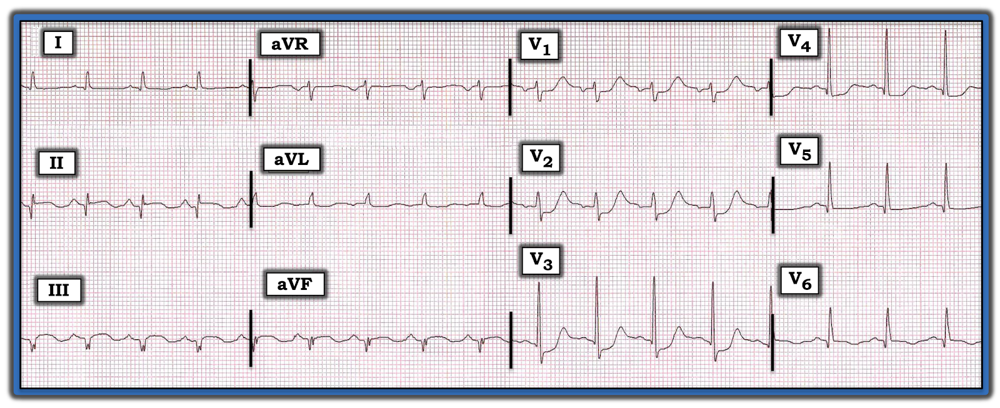
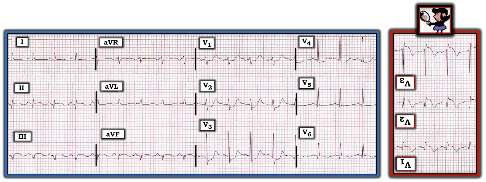

ECG Blog #246 (60) — Nghiệm pháp soi gương là gì?
Hãy hình dung điện tâm đồ ở Hình-1 được ghi từ một bệnh nhân lớn tuổi có cảm giác khó chịu vùng thượng vị và "ợ nóng". Không có bản ghi cũ để so sánh.
CÂU HỎI:
- Bạn sẽ diễn giải điện tâm đồ ở Hình-1 như thế nào?
- Vấn đề nằm ở đâu?


=======================================
LƯU Ý: Đến đây, một số bạn đọc có thể muốn nghe ECG Audio PEARL dài 8:30 phút trước khi đọc Suy nghĩ của tôi về điện tâm đồ ở Hình-1. Bạn có thể xem Suy nghĩ của tôi về bản ghi này bất cứ lúc nào (nằm ở bên dưới ECG MP-60).
=======================================

Hôm nay, ECG Media PEARL #60 (8:30 phút Audio) — Ôn lại cách dùng "nghiệm pháp Soi Gương" (mirror test) để dễ nhận ra: i) MI thành sau cấp; ii) MI bên cao hoặc thành dưới cấp (tức là mối quan hệ soi gương (reciprocal) "kỳ diệu" giữa chuyển đạo III và aVL); và, iii) ST chênh lên ở thành trước do LVH (vốn không phải là dấu hiệu của MI thành trước).
- LƯU Ý: Tôi đã thêm ĐƯỜNG LINK tới các bài ECG Blog liên quan để minh hoạ rõ hơn các khái niệm được trình bày trong Audio Pearl hôm nay (Các ĐƯỜNG LINK này nằm ở phía dưới, cuối bài blog).
SUY NGHĨ Tuần tự của tôi về điện tâm đồ ở Hình-1:
Như mọi khi — tôi ưu tiên dùng Cách tiếp cận hệ thống (mà tôi ôn lại trong ECG Blog #205):
- Tần số & Nhịp: Sóng P dương ở chuyển đạo II — nên nhịp ở Hình-1 là nhịp nhanh xoang với tần số ~105 lần/phút.
- Các khoảng (PR/QRS/QTc): Khoảng PR bình thường — phức bộ QRS hẹp — và QTc có vẻ hơi kéo dài (dù khó đánh giá khoảng QTc khi tần số tim nhanh hơn 90-100 lần/phút).
- Trục: Trục lệch về bên trái — xác định dựa vào QRS gần như âm hoàn toàn ở chuyển đạo aVF. Tôi ước tính trục mặt phẳng trán vào khoảng -30 độ, vì phức bộ QRS ở chuyển đạo II xấp xỉ đẳng pha (tức là phần dương và phần âm bằng nhau).
- Lớn các buồng tim: Không có. Thay vào đó — có điện thế thấp ở các chuyển đạo chi (tức là không chuyển đạo nào trong 6 chuyển đạo chi đo được quá 5 mm).
Về Thay đổi Q-R-S-T:
- Sóng Q — Có sóng Q lớn ở cả 3 chuyển đạo thành dưới (tức là ở chuyển đạo II, III và aVF). Cũng có sóng Q sâu hơn mức mong đợi ở V4, V5 và V6. Ngoài ra, còn có một sóng q khởi đầu nhỏ xíu nhưng có thật ở chuyển đạo V3 — sóng này đơn giản là không nên có ở đó (tức là sóng q vách bình thường ít gặp ở chuyển đạo V4, và không được thấy ở chuyển đạo V3).
- Tăng tiến sóng R — Vùng chuyển tiếp (nơi sóng R cao hơn độ sâu của sóng S) xảy ra sớm, giữa V1 đến V2 (Bình thường vùng chuyển tiếp nằm giữa V2 đến V4).
- Thay đổi sóng ST-T — Có ST chênh lên nhẹ nhưng có thật ở cả 3 chuyển đạo thành dưới. Cũng có ST chênh lên rất kín đáo ở chuyển đạo V6. Đoạn ST dẹt (nếu không muốn nói là hơi chênh xuống) ở các chuyển đạo I, aVL và V5. Có ST chênh xuống ở V1 đến V4, với ST chênh xuống tối đa ở chuyển đạo V2 và V3.
Tổng hợp lại: Điện tâm đồ ở Hình-1 gợi ý mạnh rằng đã có OMI dưới-sau-bên mới xảy ra (nếu không phải là cấp) ( = nhồi máu cơ tim do tắc — Occlusion-based Myocardial Infarction). Tôi xin bổ sung các điểm quan trọng sau:
- Không thể định tuổi nhồi máu ở ca hôm nay. Việc sóng Q ở cả các chuyển đạo thành dưới đều sâu có vẻ nghiêng về một biến cố khởi phát ít cấp hơn. Hoàn toàn không thấy sóng R ở chuyển đạo III — và ở aVF chỉ có sóng r nhỏ xíu. Dù vậy — đôi khi sóng Q đáng kể đã được ghi nhận hình thành chỉ trong vòng 1-2 giờ. Ngoài ra — hoàn toàn có khả năng bệnh nhân lớn tuổi này đã từng bị nhồi máu thành dưới trước đây — và nay đang tái nhồi máu cấp thành dưới. Điều cốt lõi: Chúng ta không thể loại trừ khả năng nhồi máu rất mới, hoặc thậm chí nhồi máu cấp đang diễn tiến, chỉ dựa trên kích thước lớn của sóng Q ở các chuyển đạo thành dưới.
- Ủng hộ cho khởi phát gần đây hơn của các thay đổi ở chuyển đạo thành dưới là việc ST chênh lên dạng vòm vẫn còn tồn tại ở cả 3 chuyển đạo thành dưới. Trong khi hình dạng và mức độ ST chênh lên ở III và aVF trông ít cấp tính hơn (và phù hợp hơn với một biến cố cũ) — thì hình dạng và mức độ ST chênh lên ở chuyển đạo II rõ ràng đáng lo ngại hơn (nhất là khi xét đến biên độ sóng R khiêm tốn ở chuyển đạo này). Dù mức độ rất ít — hình dạng đoạn ST lõm như bị múc ở chuyển đạo aVL có khả năng phù hợp với thay đổi soi gương so với hình dạng đoạn ST ở chuyển đạo III.
- Ở chuyển đạo V6 — có sóng Q tương đối lớn — đoạn ST hơi dạng vòm, và có lẽ chênh lên rất rất nhẹ — kèm sóng T bắt đầu đảo ngược. Cùng với các thay đổi điện tâm đồ vừa mô tả ở các chuyển đạo chi, điều này gợi ý đã có nhồi máu thành bên, dù không xác định được tuổi.
- Chúng ta không được biết triệu chứng bắt đầu khi nào ở bệnh nhân trong ca hôm nay. Đây là thêm một yếu tố khiến việc xác định "tuổi" của nhồi máu trở nên khó khăn.
- ĐIỂM THEN CHỐT (PEARL) #1: Chính ST chênh xuống ở V1 đến V4 (vốn tối đa ở V2 và V3) mới là điều gây lo ngại nhất về nhồi máu thành sau ở ca hôm nay — phải được coi là cấp và đang diễn tiến cho đến khi chứng minh được điều ngược lại.
CÂU HỎI:
- BẠN có nhận ra nghiệm pháp "Soi gương" dương tính không? (Xem Hình-2).


Nghiệm pháp Soi Gương dương tính ở Hình-2:
Như đã bàn chi tiết trong Audio Pearl #60 (ở trên) — nghiệm pháp soi gương được dùng như một công cụ trực quan giúp dễ nhận ra MI thành sau cấp. Nguyên lý của nghiệm pháp này rất đơn giản: Nó dựa trên thực tế là hình ảnh soi gương của các chuyển đạo trước tim cho ta biết bản chất của hoạt động điện khi nhìn từ phía thành sau của thất trái.
- Lưu ý rằng tôi đã lật ngược theo chiều dọc các chuyển đạo trước tim V1, V2 và V3 ở phần ngoài cùng bên phải của Hình-2 (hình ảnh soi gương của 3 chuyển đạo này được viền ĐỎ). Hình dạng ST chênh xuống ở chuyển đạo V1, V2 và V3 của Hình-2, khi được lật ngược theo chiều dọc (như cách nhìn trong nghiệm pháp soi gương), gợi ý sóng Q đang sâu dần — ST chênh lên với hình dạng và mức độ đáng lo ngại — và sóng T đã đảo ngược sâu.
- ĐIỂM THEN CHỐT (PEARL) #2: Dấu hiệu ST chênh xuống khu trú ở các chuyển đạo trước tim, và tối đa ở V2 và/hoặc V3 — gợi ý mạnh nhồi máu thành sau có thể đang cấp. Nhiều người thầy thuốc coi hình ảnh thay đổi ST-T mà ta thấy ở các chuyển đạo trước tim của Hình-2 là một "tương đương STEMI" — vì hình ảnh điện tâm đồ này cũng chỉ điểm OMI cấp cần tái tưới máu kịp thời, không kém gì một MI cấp có ST chênh lên (Vui lòng xem ECG Blog #193, bao gồm Audio Pearl #10 trong bài đó — để xem phần bàn luận chi tiết về khái niệm và ý nghĩa lâm sàng của việc chẩn đoán OMI cấp).
- LƯU Ý: Vùng chuyển tiếp sớm (tức là đã có sóng R cao hơn độ sâu sóng S ngay từ chuyển đạo V2) ủng hộ chẩn đoán nhồi máu thành sau ở Hình-2. Trong nghiệm pháp soi gương — sóng R ở các chuyển đạo trước tim V1, V2 và V3 càng cao thì khi lật ngược theo chiều dọc các chuyển đạo này, những sóng R đó sẽ thành sóng Q càng sâu.
ĐIỂM THEN CHỐT (PEARL) #3: BẠN có nhận ra các phức bộ QRS phân mảnh ở chuyển đạo III và aVF của Hình-2 không? Dù rõ ràng đã có nhồi máu thành dưới vào một thời điểm nào đó (tức là dựa vào độ sâu của sóng Q ở các chuyển đạo thành dưới — và sự mất biên độ sóng R ở các chuyển đạo này) — sự phân mảnh của sóng Q thành dưới ở III và aVF là thêm một dấu hiệu nữa của "sẹo" (và trong ca này là của nhồi máu cũ).
Kết luận cho ca hôm nay:
Bệnh nhân trong ca hôm nay đến khám vì khó chịu vùng thượng vị và "ợ nóng". Đặc biệt ở một bệnh nhân lớn tuổi — bệnh sử này chắc chắn có thể phù hợp với triệu chứng của một biến cố tim cấp. Các dấu hiệu điện tâm đồ đáng lo ngại gồm nhịp nhanh xoang — nhồi máu dưới-bên không rõ tuổi (với ST chênh lên tồn dư) — và, nhồi máu thành sau biểu hiện bằng nghiệm pháp soi gương dương tính với ST chênh xuống khu trú ở các chuyển đạo trước tim, tối đa ở V2 và V3.
- Phải coi đây là một biến cố cấp đang diễn tiến cho đến khi chứng minh được điều ngược lại. Lý tưởng nhất — nên thông tim kịp thời để chẩn đoán và có thể tái tưới máu.
==================================
Các bài ECG Blog liên quan đến ca hôm nay:
- ECG Blog #205 — Ôn lại Cách tiếp cận hệ thống của tôi khi đọc điện tâm đồ 12 chuyển đạo.
- ECG Blog #193 — minh hoạ cách dùng nghiệm pháp Soi Gương để dễ nhận ra MI thành sau cấp. Bài này ôn lại những điều cơ bản để dự đoán "động mạch thủ phạm". LƯU Ý: Hình-5 trong Phần bổ sung của bài này minh hoạ những điểm thiết yếu để nhận diện MI thành sau đơn độc.
- ECG Blog #184 — minh hoạ mối quan hệ "kỳ diệu" đối ngược kiểu soi gương khi thiếu máu cục bộ cấp giữa chuyển đạo III và chuyển đạo aVL (được trình bày trong Audio Pearl #2 của bài này).
- ECG Blog #167 — thêm một ca có mối quan hệ "kỳ diệu" đối ngược kiểu soi gương giữa chuyển đạo III và chuyển đạo aVL giúp xác nhận OMI cấp.
- ECG Blog #245 — Ôn lại chẩn đoán LVH trên điện tâm đồ, kể cả những điểm CẦN THẬN TRỌNG có thể làm phức tạp việc đánh giá thiếu máu cục bộ cấp đi kèm.
- Bài ngày 21 tháng 9 năm 2020 trên Dr. Smith's ECG Blog — Bình luận của tôi (ở cuối trang) nhấn mạnh sự hữu ích của nghiệm pháp Soi Gương trong chẩn đoán MI thành sau cấp.
- Bài ngày 16 tháng 2 năm 2019 trên Dr. Smith's ECG Blog — Bình luận của tôi (ở cuối trang) nhấn mạnh sự hữu ích của nghiệm pháp Soi Gương trong chẩn đoán MI thành sau cấp.
- Bài ngày 29 tháng 3 năm 2019 trên Dr. Smith's ECG Blog — Bình luận của tôi về Bản ghi A (ở cuối trang) minh hoạ việc LVH là một hình ảnh giả thường gặp của thiếu máu cục bộ cấp.
- Bài ngày 31 tháng 3 năm 2019 trên Dr. Smith's ECG Blog — Bình luận của tôi (ở cuối trang) minh hoạ tác động có thể gây nhầm lẫn của điện tâm đồ trước viện ở bệnh nhân có LVH, do cắt cụt điện thế sóng S ở các chuyển đạo trước tim.
- Bài ngày 27 tháng 12 năm 2018 trên Dr. Smith's ECG Blog — Bình luận của tôi (ở cuối trang) minh hoạ một ca có ST chênh lên ở thành trước do LVH có thể gợi ý sai là nhồi máu thành trước cấp.
- ECG Blog #80 — ôn lại cách dự đoán động mạch "thủ phạm" (và đưa thêm một ca minh hoạ nghiệm pháp Soi Gương trong chẩn đoán MI thành sau cấp).

==================================
PHẦN BỔ SUNG (23/8/2021): Tôi đã thêm ở Hình-3 bên dưới phần ôn lại một ca có MI thành sau đơn độc (tức là không kèm ST chênh lên ở các chuyển đạo thành dưới).